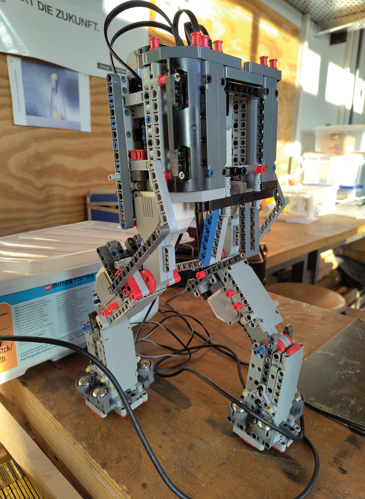

Arbeitsmech

Der Arbeitsmech, ein Roboter, der auf zwei Beinen steht und sich fortbewegt.
Projektübersicht
Im Projekt entwickeln wir einen zweibeinigen Roboter - eine technische Herausforderung, die Balance, Koordination und Regelungstechnik vereint. Begonnen wurde mit einem selbst entworfenen Prototyp aus Klemmbausteinen, um Mechanik und Kinematik praktisch zu erproben. In der nächsten Phase integrieren wir eine Arduino‑Steuerung sowie Sensoren und Motoransteuerung, um Stabilität und Gangmuster zu verbessern.
Unser langfristiges Ziel: Ein System, das sicher stehen, laufen und kleinere Lasten tragen kann.
Außerdem wurde mit 3D-Druck gearbeitet.
Team-Information
Schüler: Ben Glöckner, Robin Sterner, Hannes Prager
Klassenstufen: 7/8/9
Fachbereich: Technik
Betreuer: Johannes Danner
Erhaltene Preise & Auszeichnungen
3. Platz
Jugend forscht Regionalwettbewerb
Februar 2025